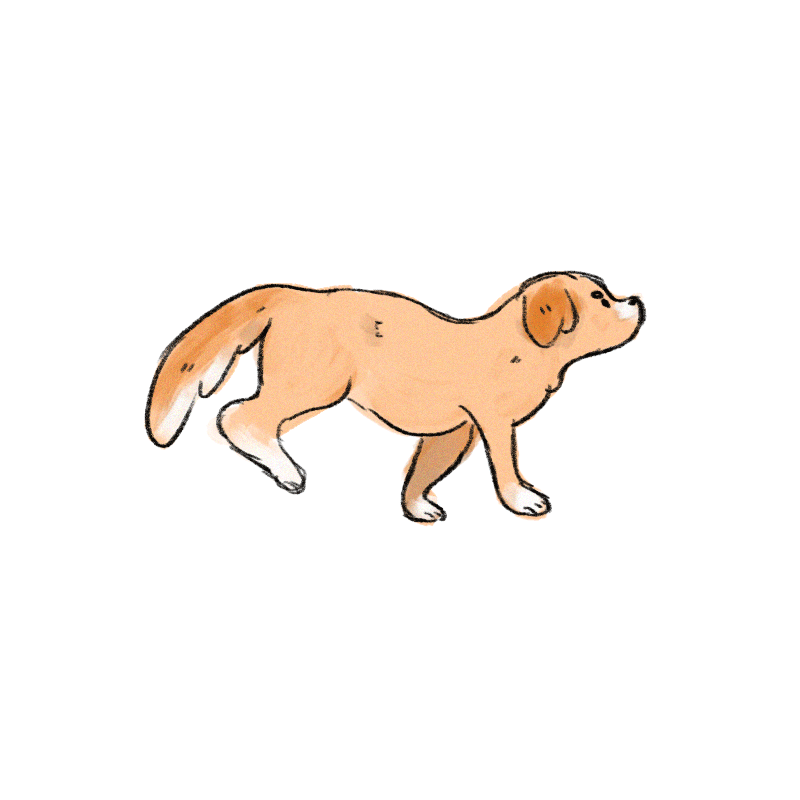

Dogname has decided to scare the animal control officer away to give them enough time to run away and escape him. The animal control officer is reaching for Dogname and so Dogname thinks fast and decides to growl and bark at the officer! The officer jumps back and gives Dogname just enough room to make a run for it! As Dogname is running away, they starts to hear a familiar voice calling their name! “Dogname! Where are you?” they hears in the distance. Running as fast as they can Dogname gets closer and closer to the sound. Dogname hears their name being called over and over again and the last corner they turn Dogname sees their owner! Dogname sees the animal control officer right behind so decides to run as fast as they could to their owner. Dogname makes their way to their owner and is finally reunited with him!! Thanks for your help!
Thank you for playing Way Home! I hope you enjoyed! You can now return to the main menu and view your completed storylines!
Return to Main Menu